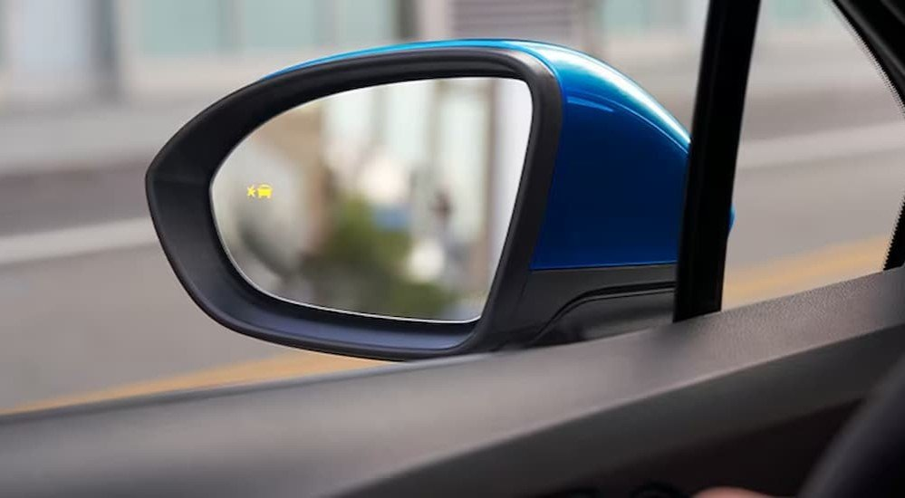
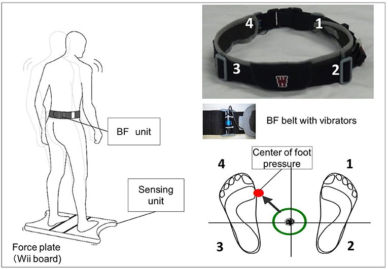
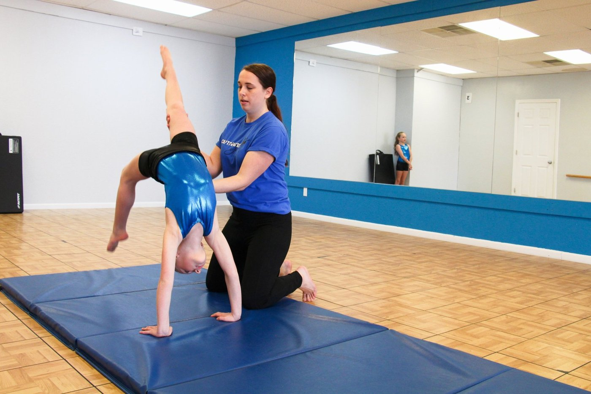

Feedback Classifications
Before we can use feedback well, we need to name its types. What counts as feedback, when does it arrive, and what does it tell the learner?
By the end of this lesson you will be able to…
- 1Distinguish task-intrinsic (inherent) feedback from augmented feedback.
- 2Classify augmented feedback by timing: concurrent vs. terminal.
- 3Define knowledge of results (KR) and knowledge of performance (KP).
- 4Classify real feedback examples along both dimensions.
Two sources of information
Every time someone performs a movement, information about it can come from two places:
From the movement itself
Information that arises as a natural consequence of the action — what you see, hear, and feel through your own senses. Watching your shot miss; feeling your balance shift.
Added from outside
Information supplied to the learner in addition to what their own senses provide — from a coach, clinician, or device. “Bend your knees!” · “You were faster than last time.”
Augmented feedback is the part a coach or clinician controls — so it’s where your professional decisions live. That’s why it’s worth classifying carefully.
Inherent or augmented?
Scenario 1. A patient practicing sit-to-stand feels their thighs burn and sees themselves rise in the mirror. Is that inherent or augmented feedback?
Scenario 2. As the same patient stands, their therapist says “straighten up all the way — you’re stopping a little short.” Inherent or augmented?
Answer both to continue.
When does the feedback arrive?
Augmented feedback can be classified by when it’s delivered relative to the movement:
During the movement
Delivered while the action is happening. Can be visual, auditory, or haptic (e.g., vibration).
After the movement
Delivered after the action is complete — about the result or the movement itself. This is the most common kind.
Feedback delivered during the action
Concurrent feedback is often built into devices you already know:


A vibrotactile balance belt buzzes on one side the moment your center of pressure drifts too close to the edge of your base of support — giving a balance-impaired patient a real-time nudge back to center. The feedback happens during the sway, not after.
Your smartwatch tapping your wrist — to flag a notification, or to cue “time to stand” or “turn left” during navigation — is the same idea: haptic information delivered in the moment, while you’re doing something else.
Terminal feedback: delivered after the movement
Terminal feedback arrives once the action is complete. It can describe the result of the movement or the movement itself — and it’s the most common form of augmented feedback in coaching and the clinic.
Because it comes after the movement, terminal feedback doesn’t interfere with performing the skill — and it gives the learner something to process before the next attempt. That’s why almost all of the research (and the rest of this module) focuses on it. It splits into two kinds, depending on what it’s about — coming up next.
KR and KP: what is the feedback about?
Terminal feedback (after the movement) splits by what information it carries:
Knowledge of Results (KR)
Information about the outcome of the attempt — did you achieve the goal? Verbal or verbalizable. “You were 3 cm short.”
Knowledge of Performance (KP)
Information about the movement form — how you produced the action. Verbal or nonverbal. “Your backswing was too short.”
KR = the result (what happened). KP = the performance (how you moved). A stopwatch time is KR; a note about your knee angle is KP.
KR and KP while learning to write
In this clip, my son Theo practices writing his name while I give him feedback in real time. Listen for the difference:
- RKR (the result): “That’s super-giant!” — a comment on the outcome (how the letters turned out).
- PKP (the performance): “Hold your fingers in a pinch as you write” · “Maybe a little rushing here…” — both target how he’s moving, not the result.
Video not loading? Open it here: youtube.com/shorts/D5xnXx1_57Y
KR or KP?
Each line is real feedback a professional might give. Decide whether it’s about the result (KR) or the performance (KP). Answer all four to continue.
KR = Result
What happened / the outcome.
KP = Performance
How the movement was produced.
0 of 4 classified
Classify all four to continue.
KP can be physical, not just verbal
Knowledge of performance doesn’t have to be spoken. Physical (manual) guidance is KP delivered through touch — literally moving the learner’s body through the correct form.

Other examples: a trainer guiding a lifter through a new exercise (“feel the correct movement”), a PT guiding a patient’s limb through proper form, or a post-op brace that physically limits range of motion to a safe band.
Classify each feedback source
Real tools from clinical and training settings. For each, decide both: is it KR or KP, and is it delivered during or after the movement? Classify both axes for all three to continue.
Answer both axes for all three to continue.
A running coach watches an athlete finish a sprint and says: “Your split was 12.4 — half a second slower than yesterday.” How is this feedback best classified?
Answer to continue.
What you can now do
- 1Separate inherent feedback (from the movement) from augmented feedback (added from outside).
- 2Classify augmented feedback by timing: concurrent (during) vs. terminal (after).
- 3Tell KR (the result) from KP (the performance) — including physical guidance as nonverbal KP.
Now that you can name the types, Lesson 2 asks what augmented feedback actually does for learning — its informational, motivational, attentional, and dependency-producing roles.
Return to Canvas for this week’s lab and discussion.